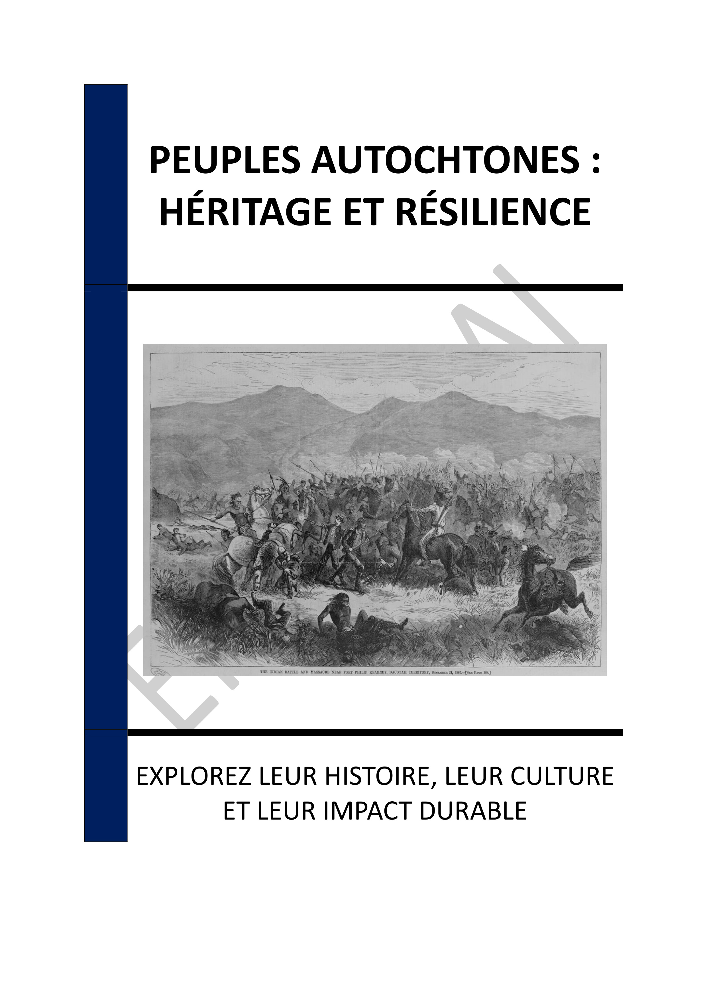

▶
Vitesse
++
+
=
-
--
INTRODUCTION - HÉRITAGE ET RÉSILIENCE DES PEUPLES AUTOCHTONES : UNE EXPLORATION PROFONDE
Chapitre 1 - ORIGINES DES PEUPLES AUTOCHTONES D'AMÉRIQUE : UN VOYAGE À TRAVERS LE TEMPS
1.1 - Les premières migrations humaines vers les Amériques
1.2 - Établissement des premières civilisations
1.3 - Évolution des cultures précolombiennes
Chapitre 2 - DIVERSITÉ CULTURELLE ET LINGUISTIQUE DES CIVILISATIONS AUTOCHTONES
2.1 - Langues autochtones et leur importance
2.2 - Traditions et pratiques culturelles
2.3 - Rôle des mythes et légendes
Chapitre 3 - INNOVATIONS ET SYSTÈMES SOCIAUX : CONTRIBUTIONS DES PEUPLES AUTOCHTONES
3.1 - Avancées agricoles et alimentaires
3.2 - Architecture et urbanisme
3.3 - Systèmes sociaux et politiques
Chapitre 4 - IMPACT DE LA COLONISATION : DÉFIS ET RÉSILIENCE
4.1 - Premiers contacts et leurs conséquences
4.2 - Déplacements forcés et assimilation
4.3 - Résistance et adaptation
Chapitre 5 - FIGURES ÉMINENTES ET LEADERS AUTOCHTONES : HÉROS DE LA RÉSILIENCE
5.1 - Leaders historiques et leur héritage
5.2 - Figures contemporaines et leur impact
5.3 - Portraits inspirants de communautés
Chapitre 6 - REVENDICATIONS ET DROITS : LUTTE POUR LA RECONNAISSANCE
6.1 - Droits territoriaux et souveraineté
6.2 - Justice sociale et réparations
6.3 - Reconnaissance culturelle et linguistique
Chapitre 7 - RÔLE ACTUEL DANS LA SOCIÉTÉ CONTEMPORAINE : ENGAGEMENT ET ACTIVISME
7.1 - Participation politique et sociale
7.2 - Activisme environnemental
7.3 - Initiatives éducatives et culturelles
Chapitre 8 - CONTRIBUTION À LA PRÉSERVATION DE L'ENVIRONNEMENT : SAVOIRS ANCESTRAUX
8.1 - Pratiques durables et écologiques
8.2 - Gestion des ressources naturelles
8.3 - Collaboration avec la science moderne
CONCLUSION - CÉLÉBRER LA DIVERSITÉ ET LA RÉSILIENCE DES PEUPLES AUTOCHTONES
📄 Consulter les annexes du livre
Mentions légales